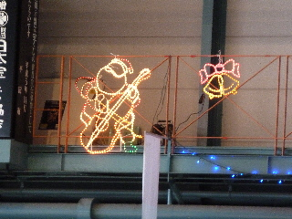

湖遊館でスケートをしました。
2014/12/23
今年もクリスマスイベントでスケートをしました。
足痛い。でも楽しいって思いながら滑りました。
歳のせいか、年々へたになってる気がする。
島根県出雲市園町1660番地1
2014/12/23
今年もクリスマスイベントでスケートをしました。
足痛い。でも楽しいって思いながら滑りました。
歳のせいか、年々へたになってる気がする。
2012/12/24
毎年あるんですが、今年もクリスマスイベントありました。

通常大人1100円が今日は無料です。
貸靴料の400円を支払って、スケートを楽しみました。
毎年行きたいイベントですね。
2010/05/05
今日、湖遊館はスケートが今期最終日のためか、無料で滑れました。
通常だと一般1100円に貸靴代400円で計1500円かかるのが、今日は貸し靴代金の400円だけで滑れました。
とってもお得です。
外は気温が高く暑かったり、黄砂が飛んでてちょっと過ごしにくかったですが、スケートリンクはひんやりとしていて快適でした。
スケートっていうと冬やるものなイメージですが、暖かくなってからやるのもいいものですね。
冬になったらまたスケートしに行きたいって思いました。